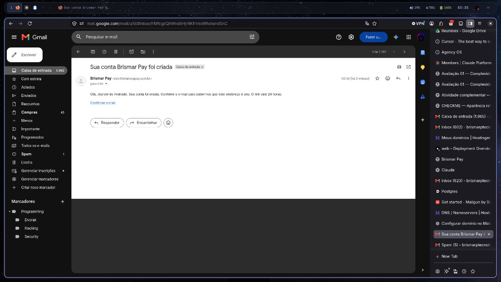

Mensagem entregue às 03:34
A criação da conta gerou o e-mail “Sua conta Brismar Pay foi criada”. O remetente foi Brismar Pay, no endereço dev@brismarppay.com.br, e a mensagem chegou na caixa de entrada do Gmail.

O texto cumprimenta o titular, diz que a conta foi criada e pede a confirmação do endereço. O link vale 24 horas e só pode ser usado uma vez. Quem já entrou no painel e ainda não confirmou vê um aviso com o botão Reenviar.
Confirmar a conta
-
A pessoa se cadastra Informa nome, e-mail e senha. O login já funciona nesse momento, para a pessoa seguir o cadastro da empresa.
-
O Brismar Pay envia um e-mail só O assunto é “Sua conta Brismar Pay foi criada”. Dentro dele está o botão Confirmar e-mail. Não há código numérico: o caminho é o link.
-
O clique abre a página certa O endereço leva a /verify-email. A página confirma o token e marca o e-mail como verificado.
-
O aviso sai do painel Depois da confirmação, a faixa “Confirme o e-mail da sua conta” deixa de aparecer. Se o link vencer, a pessoa pede outro pelo Reenviar.
Senha
Na tela de login, “Esqueci a senha” pede o e-mail e envia “Redefinir senha”. Esse link vale 1 hora e abre /reset-password, onde a pessoa escolhe a senha nova. A resposta é a mesma se o e-mail existir ou não.
Quem já está logado troca a senha em Senha, no menu. Informa a senha atual e a nova. Não há um segundo clique para aprovar: em seguida sai o aviso “Sua senha foi alterada”. Se a troca não foi da própria pessoa, o caminho é o “Esqueci a senha”.